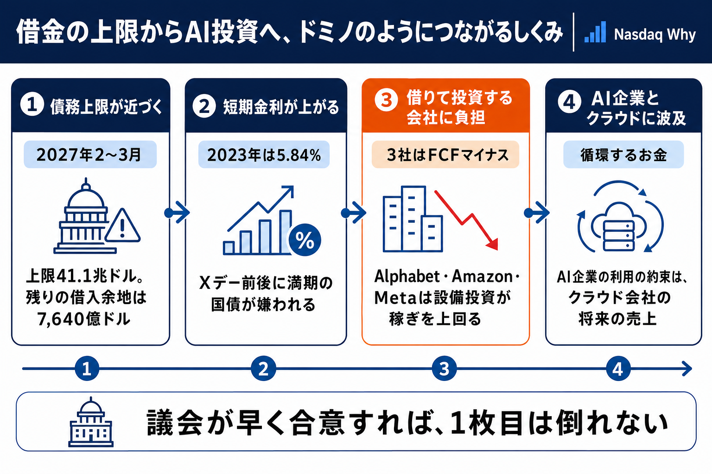
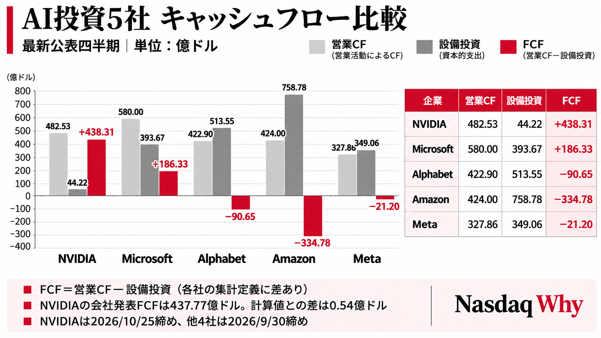
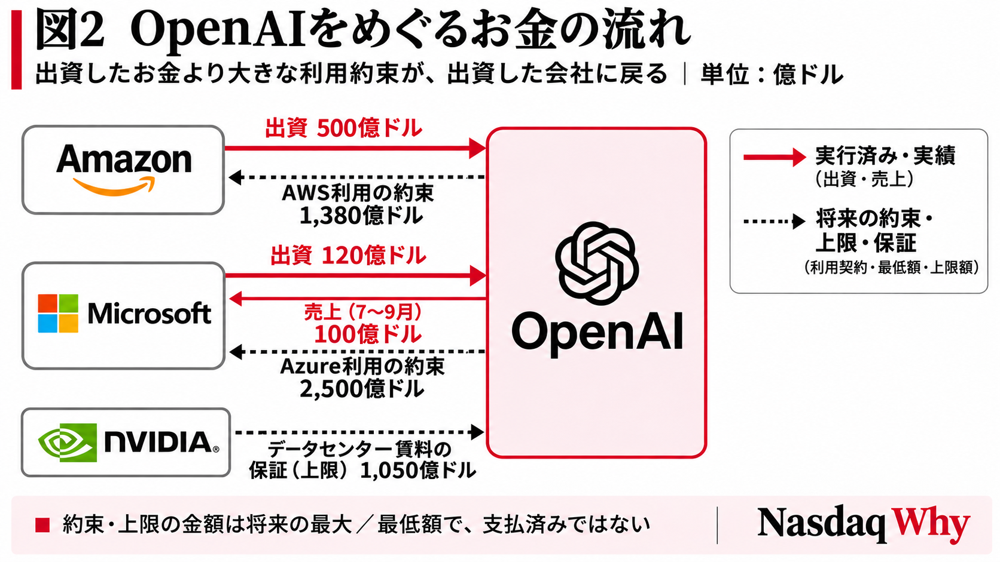
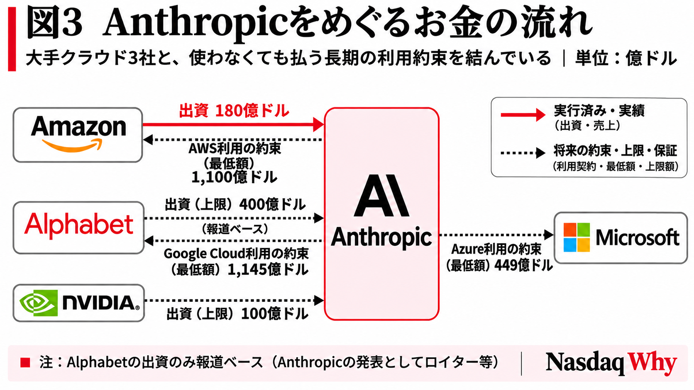
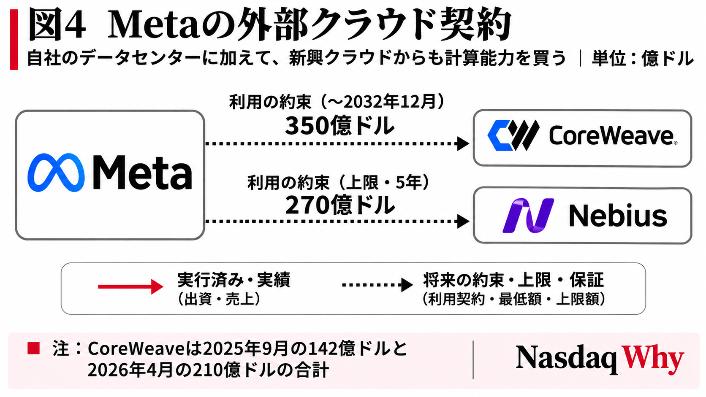

ニュースの深掘り
米国の借金の上限は、なぜAI投資の話につながるのか？――大手3社は設備投資が稼ぎを上回る
米国の借金の上限（債務上限）に、2027年2〜3月ごろ再び届く見通しです。超党派の研究機関BPCが2026年11月18日に公表しました。一方、AIに投資する大手5社のうち3社は、7〜9月期に設備投資が本業で稼いだ現金を上回りました。AI企業の間では、出資したお金より大きな「利用の約束」が出資元に戻る、循環型のお金の流れもできています。一見別々の話が、なぜつながるのかを一次資料の数字で見ていきます。

債務上限：2027年2〜3月に届く見通し
BPCによると、議会が何もしなければ、米国は2027年2月か3月に債務上限に届く可能性が高いということです。この時期は税金の還付が多く、政府のお金が出ていきやすいためです。
今の上限は41.1兆ドルで、2025年7月に36.1兆ドルから5兆ドル引き上げられました。その後に借金が4.2兆ドル増え、残りの借入余地は7,640億ドルです。
注意したいのは、「上限に届く日」と「Xデー」は別の日だということです。Xデーは、政府が支払いを期限どおりすべて履行できなくなると見込まれる日で、単に現金がゼロになる日ではありません。上限に届いた後も、財務省は手元の資金と「特別措置」というやりくりで、およそ6〜9か月は支払いを続けられます。BPCは、Xデーの具体的な月はまだ予測できないとしています。
2023年の前例：短期国債の利回りが急上昇
2023年の対立が最も深刻だったころ、財務省は6月6日に満期を迎える4週間ものの短期国債を500億ドル発行しました。利回りは5.84%で、2000年以来で最も高い落札利回りでした。
Xデーの後に満期を迎える国債ほど「期日どおり返ってこないかもしれない」と嫌われたためです。債務上限のリスクは、短期国債全体ではなく、特定の満期日に集中します。
BPCは、2011年・2013年・2023年のいずれの対立でも短期金利が上がり、政府の利払いが増えたと指摘しています。大手格付け会社3社は、いずれも米国債を格下げしています。
中間選挙の結果と、議会の交渉
AP通信の集計（2026年11月22日 米太平洋時間午前4時24〜27分時点。その後変わっている可能性あり）では、上院（100議席）は民主党が計56（民主党と行動を共にする2人を含む）、共和党が計44です。下院（435議席）は民主党が獲得257、共和党が獲得173で、5議席はどの党の獲得にも数えられていません。民主党には上院で「支配に到達」、下院で「過半数に到達」の表示が付いていますが、これはAPの議席数から機械的に出したもので、APによる判定ではありません。
債務上限の引き上げや停止には、議会での立法が必要です。BPCは、来年始まる第120議会の新しい議員や指導部が、新たな支出や税制の変更を進める可能性を指摘しています。2027会計年度の本予算12本はいずれも成立しておらず、政府は12月11日までのつなぎ予算で運営されています。
AI投資5社：3社で設備投資が稼ぎを上回る
最新の四半期では、Alphabet・Amazon・Metaの3社のフリーキャッシュフロー（営業CF−設備投資）がマイナスでした。Alphabetは−90.65億ドル、Amazonは−334.78億ドル、Metaは−21.20億ドルです。NVIDIAは+438.31億ドル、Microsoftは+186.33億ドルでした。
2026年（暦年）の設備投資の見通しは、Amazonが約2,200億ドル、Alphabetが1,950〜2,050億ドル、Microsoftが約1,700億ドル（リース込み）、Metaが1,350〜1,450億ドルです。
FCFはこの記事では5社とも「営業CF−設備投資」で計算しています。設備投資に含める範囲は会社ごとに違い、NVIDIAの四半期は10月25日締め、ほかの4社は9月30日締めです。NVIDIAの会社発表のFCFは437.77億ドルで、計算値との差は0.54億ドルです。
FCFがマイナスの3社の長期負債（9月30日時点）は、Amazonが1,731億ドル、Alphabetが1,251億ドル、Metaが809億ドルです。

OpenAIをめぐるお金の流れ
AmazonはOpenAIに500億ドルを出資し、OpenAIはAWSの利用を1,380億ドル分約束しています。出資したお金より大きな約束が、出資元に戻る形です。
MicrosoftはOpenAIへの出資の約束130億ドルのうち120億ドルを実行済みです。一方、7〜9月期だけでOpenAIから100億ドルの売上があり、さらにAzureを2,500億ドル分使う約束も受けています。NVIDIAは、OpenAIが借りるデータセンターの賃料を最大1,050億ドルまで保証しています。

Anthropic・Metaをめぐるお金の流れ
Anthropicの上場申請書類（S-1）によると、使わなくても支払う利用の約束は、Googleに最低1,145億ドル、Amazonに最低1,100億ドル、Microsoftに最低449億ドルです。Amazonはこれまでに180億ドルを出資しています。Alphabetは最大400億ドルの出資を決めたと報じられています（報道ベース）。

Metaは新興クラウドからも計算能力を買う
Metaは自社のデータセンターに加えて、新興クラウドのCoreWeaveと計350億ドル、Nebiusと最大270億ドルの利用契約を結んでいます。
ここに出てくる金額は、出資・実際の売上・将来の利用の約束・保証と、性質がそれぞれ違います。足し合わせて「AI業界でこれだけのお金が動いた」と読むことはできません。約束や上限の金額は、将来の最低額・最大額です。

3つの話はどうつながるか
一言でいうと、「米国政府の借金の上限」→「金利」→「AI企業のお金のやりくり」の順に、ドミノのようにつながる可能性があります。中間選挙で選ばれた議会は、その最初の1枚が倒れるかどうかに関わります。ただし、これは今後の予想ではなく、ニュースを見るときのシナリオの整理です。
- 債務上限が近づくと、短期金利が上がりやすい：過去3回の対立では、特にXデーの前後に満期を迎える国債の金利が上がりました。
- 金利が上がると、お金を借りて投資する会社ほど負担が増える：Alphabet・Amazon・Metaは設備投資が稼ぎを上回り、長期負債も大きい立場です。
- AI企業の資金繰りが苦しくなると、クラウド会社にも跳ね返る：OpenAIやAnthropicの利用の約束は、出資したクラウド会社の将来の売上です。
- 中間選挙との関係：新しい議会が早く合意できれば、1枚目は倒れません。交渉が長引くほど、1枚目が倒れるおそれが大きくなります。
- 反対の見方：米国はこれまで、Xデーの前には必ず債務上限を引き上げるか停止してきました。設備投資を支えているのはクラウドやAIの強い需要で、債務上限だけでAI投資の流れが変わるとは言えません。
次に見るもの
12月11日のつなぎ予算の期限と、2027会計年度の予算の行方。2027年2〜3月に上限に届いた後の、財務省の特別措置の開始。短期国債の満期ごとの利回り。大手各社が来年1〜2月の決算で示す2027年の設備投資の計画です。
NasdaqWhyでは、ニュースの「なぜ？」を一次資料の数字で深掘りしていきます。
出典
- BPC：The Debt Limit Returns in 2027: What to Expect（2026年11月18日）
- NVIDIA：2027年1月期 第3四半期 決算発表（SEC）
- Microsoft：2027年6月期 第1四半期 決算発表（SEC）
- Microsoft：2027年6月期 第1四半期 10-Q（SEC）
- Microsoft：決算説明会の発言録（2026年10月28日）
- Alphabet：2026年第3四半期 決算発表
- Amazon：2026年第3四半期 10-Q（SEC）
- Meta：2026年第3四半期 決算発表
- Anthropic：上場申請書類 S-1（2026年10月26日）
- Microsoft公式ブログ（2025年10月28日）
- NVIDIA：10-Q（2026年7月期、SEC）
- CoreWeave：Metaとの契約の発表（2026年4月9日）
- Nebius：Metaとの契約の発表（2026年3月16日）
- ロイター（2026年4月24日、Alphabet→Anthropicの出資の報道）